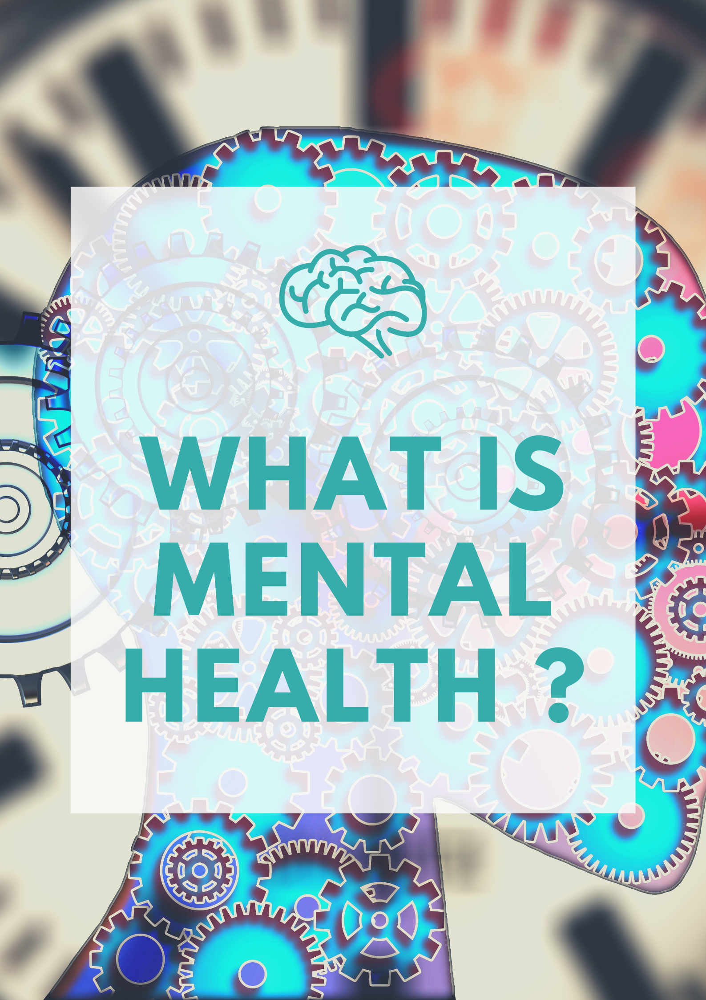
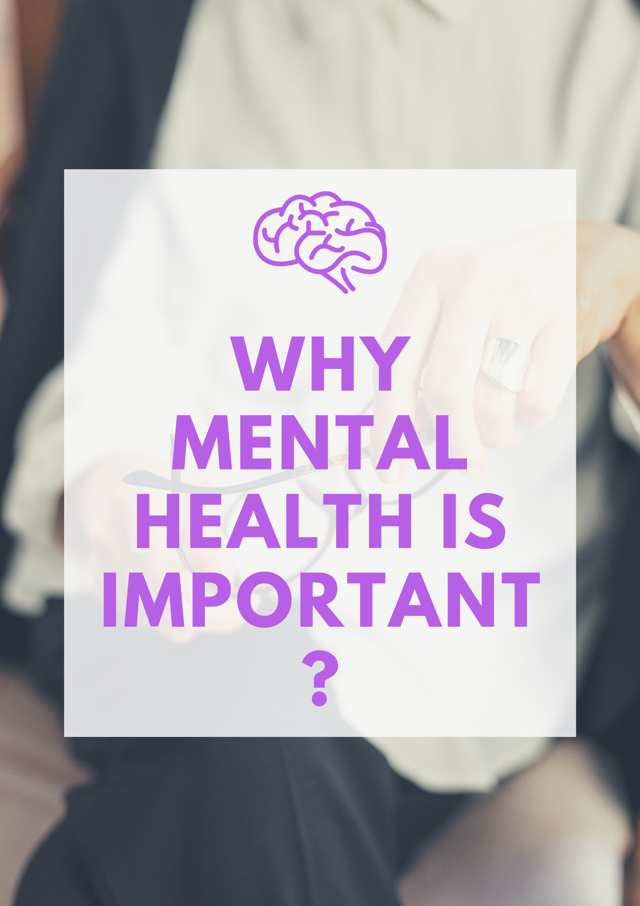

#INTRO
Many people diagnosed with mental illness achieve strength and recovery through participating in individual or group treatment.
There are many different treatment options available. There is no treatment that works for everyone – individuals can chose the
treatment, or combination of treatments, that works best.
#PSYCOTHERAPY
Psychotherapy is the therapeutic treatment of mental illness provided by a trained mental health professional. Psychotherapy
explores thoughts, feelings, and behaviors, and seeks to improve an individual’s well-being. Psychotherapy paired with medication
is the most effective way to promote recovery. Examples include: Cognitive Behavioral Therapy, Exposure Therapy, Dialectical
Behavior Therapy, etc.
#MEDICATION
Medication does not outright cure mental illness. However, it may help with the management of symptoms. Medication paired
with psychotherapy is the most effective way to promote recovery.
#CASE MANAGEMENT
Case management coordinates services for an individual with the help of a case manager. A case manager can help assess,
plan, and implement a number of strategies to facilitate recovery.
#HOSPITALIZATION
In a minority of cases, hospitalization may be necessary so that an individual can be closely monitored, accurately diagnosed or
have medications adjusted when his or her mental illness temporarily worsens.
#SUPPORT GROUP
A support group is a group meeting where members guide each other towards the shared goal of recovery. Support groups are often
comprised of nonprofessionals, but peers that have suffered from similar experiences.
#COMPLEMENTARY AND ALTERNATIVE
Complementary & Alternative Medicine, or CAM, refers to treatment and practices that are not typically associated with standard care.
CAM may be used in place of or addition to standard health practices.
#SELF HELP PLAN
A self-help plan is a unique health plan where an individual addresses his or her condition by implementing strategies that promote wellness.
Self-help plans may involve addressing wellness, recovery, triggers or warning signs.
#PEER SUPPORT
Peer Support refers to receiving help from individuals who have suffered from similar experiences.
#KNOW MORE ABOUT MENTAL HEALTH :
